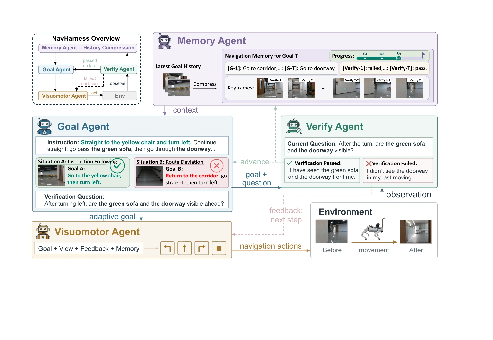
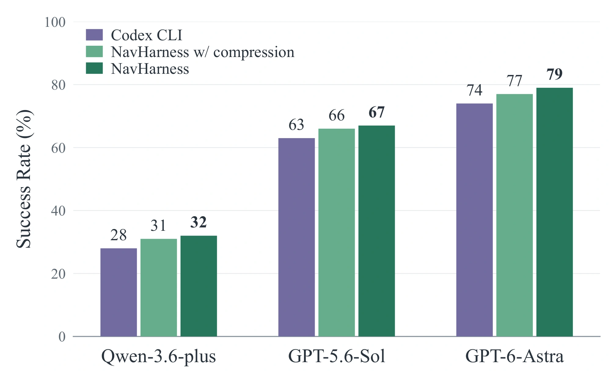

Goal Agent
Set a local goal and an observable completion question from the instruction, current view, and history. Revise the goal when the scene requires it.
R2R-CE and RxR-CE results. NE is in meters; the remaining metrics are percentages.
| Method / backbone | Views | Training | R2R-CE | RxR-CE | ||||||
|---|---|---|---|---|---|---|---|---|---|---|
| NE ↓ | OSR ↑ | SR ↑ | SPL ↑ | NE ↓ | SR ↑ | SPL ↑ | nDTW ↑ | |||
| Trained navigation models | ||||||||||
| NaVid | M | Trained | 5.47 | 49.1 | 37.4 | 35.9 | 8.41 | 23.8 | 21.2 | — |
| NaVILA | M | Trained | 5.22 | 62.5 | 54.0 | 49.0 | 6.77 | 49.3 | 44.0 | 58.8 |
| StreamVLN | M | Trained | 4.90 | 63.6 | 56.4 | 50.2 | 5.65 | 54.4 | 45.4 | 63.7 |
| JanusVLN | M | Trained | 4.78 | 65.2 | 60.5 | 56.8 | 6.06 | 56.2 | 47.5 | 62.1 |
| NavFoM | P | Trained | 4.61 | 72.1 | 61.7 | 55.3 | 4.74 | 64.4 | 56.2 | 65.8 |
| AwareVLN | M | Trained | 4.02 | 73.5 | 65.4 | 55.1 | 3.95 | 67.6 | 56.1 | 65.7 |
| OmniNav | M | Trained | 3.74 | 74.6 | 69.5 | 66.1 | 3.77 | 73.6 | 62.0 | — |
| Qwen-RobotNav-8B (policy) | P | Trained | 3.53 | 78.5 | 72.1 | 66.6 | 3.58 | 76.5 | 65.7 | 72.5 |
| Navigation workflows | ||||||||||
| SmartWay / GPT-4o | P+D | Zero-shot | 7.01 | 51.0 | 29.0 | 22.46 | — | — | — | — |
| SmartWay / GPT-5.5 | P+D | Zero-shot | 5.16 | 60.0 | 44.0 | 35.04 | — | — | — | — |
| Vesta | M | Trained | 5.16 | 61.4 | 55.5 | 50.8 | — | — | — | — |
| InternVLA-N1 / DualVLN | M | Trained | 4.05 | 70.7 | 64.3 | 58.5 | 4.58 | 61.4 | 51.8 | 70.0 |
| ABot-N1 | 3-cam | Trained | 3.32 | 75.2 | 70.9 | 67.5 | 3.13 | 73.9 | 63.9 | — |
| Agentic VLN systems | ||||||||||
| AgenticNav / GPT-5.5 | P+D | Zero-shot | 5.19 | 65.0 | 55.0 | 48.41 | — | — | — | — |
| Minimal / fable-5-max | M | Zero-shot | 3.84 | 83.0 | 78.0 | 65.27 | — | — | — | — |
| HarnessVLN / GPT-5.5 | P+D | Zero-shot | 4.01 | 72.7 | 60.8 | 43.5 | 6.42 | 53.9 | 38.0 | 54.8 |
| Controlled comparison with GPT-5.6-Sol | ||||||||||
| Codex CLI / GPT-5.6-Sol | M | Zero-shot | 4.75 | 70.0 | 62.6 | 44.5 | 9.03 | 28.0 | 21.5 | 41.2 |
| NavHarness / GPT-5.6-Sol | M | Zero-shot | 4.60 | 69.5 | 67.0 | 47.9 | 7.28 | 34.0 | 25.0 | 47.0 |
| Controlled comparison with GPT-6-Astra | ||||||||||
| Codex CLI / GPT-6-Astra | M | Zero-shot | 4.49 | 75.0 | 74.0 | 62.5 | 3.14 | 76.3 | 60.0 | 71.9 |
| NavHarness / GPT-6-Astra | M | Zero-shot | 3.27 | 81.5 | 79.0 | 66.6 | 2.42 | 82.5 | 64.7 | 73.8 |
M = monocular, P = panorama, D = depth. Results retain each external method’s original protocol. Bold marks the best reported value per metric; underlining marks the best within an external-method group unless bold.
Vision-and-Language Navigation requires embodied agents to generate actions from instructions and observations. General-purpose multimodal agents provide a promising basis, but plausible local actions do not ensure that execution remains consistent with the intended route, particularly over long horizons. Accumulated interaction history also increases the input required for later decisions.
NavHarness organizes navigation around adaptive goals. A Goal Agent sets local objectives, a Visuomotor Agent executes them, a Verify Agent checks observable completion conditions, and a Memory Agent compresses completed multimodal history while retaining information needed for subsequent navigation.
We evaluate R2R-CE and RxR-CE, compare variants across three model backbones, and study context evolution. In real-world evaluation, NavHarness achieves 83.3% success and 1.51 m navigation error across eight challenging routes evaluated three times each.

Set a local goal and an observable completion question from the instruction, current view, and history. Revise the goal when the scene requires it.
Translate the active goal into forward movements, turns, and stopping, using current observations and verification feedback.
Check observed outcomes against the goal’s completion condition. Guide continued execution, correction, or advancement.
At verified completion, consolidate the finished stage into a compact route summary, verification outcomes, and visual keyframes.
On R2R-CE, the framework improves success rate with Qwen-3.6-plus, GPT-5.6-Sol, and GPT-6-Astra. Compression retains part of the gain.

Verified goal completion provides recurring boundaries for summarizing multimodal history.
Text per decision falls by 55.5–71.6% across the four benchmark/backbone settings. Total-token savings depend on the backbone and come with navigation trade-offs.
With goal-completion compression compared with the same harness without compression.
For GPT-6-Astra on RxR-CE, total tokens change from 1538.84k to 1552.46k, with SR 82.5 → 69.0% and SPL 64.7 → 49.5%. Total tokens include internal calls and compression overhead; incomplete usage records are excluded.
Cache, Input, and Total are thousands of tokens per episode. Img./Dec. and Text/Dec. measure images and thousands of text tokens per outer navigation call.
| Model | Harness | Compress. | SR ↑ | SPL ↑ | Cache | Input ↓ | Total ↓ | Img./Dec. | Text/Dec. | Ctx. red. ↑ |
|---|---|---|---|---|---|---|---|---|---|---|
| R2R-CE | ||||||||||
| GPT-5.6-Sol | Codex CLI | Native | 62.6 | 44.5 | 1351.40 | 1398.72 | 1410.31 | — | — | — |
| NavHarness | Off | 67.0 | 47.9 | 1234.50 | 1334.64 | 1345.23 | — | — | — | |
| NavHarness | Goal | 66.0 | 50.3 | 770.45 | 851.85 | 861.82 | 11.80 | 7.07 | 26.42 | |
| GPT-6-Astra | Codex CLI | Native | 74.0 | 62.5 | 656.30 | 687.77 | 689.81 | 9.42 | 73.72 | — |
| NavHarness | Off | 81.5 | 79.0 | 510.55 | 577.91 | 580.91 | — | — | — | |
| NavHarness | Goal | 77.0 | 65.6 | 478.34 | 544.82 | 548.87 | 7.21 | 12.11 | 12.76 | |
| RxR-CE | ||||||||||
| GPT-5.6-Sol | Codex CLI | Native | 28.0 | 21.0 | 1946.31 | 2017.16 | 2027.81 | — | — | — |
| NavHarness | Off | 34.0 | 25.0 | 4008.33 | 4277.80 | 4298.55 | 45.05 | 122.09 | — | |
| NavHarness | Goal | 32.0 | 21.9 | 1702.70 | 1847.59 | 1865.92 | 18.14 | 11.63 | 30.41 | |
| GPT-6-Astra | Codex CLI | Native | 76.3 | 60.0 | 1097.85 | 1145.12 | 1149.50 | — | — | — |
| NavHarness | Off | 82.5 | 64.7 | 1392.89 | 1533.90 | 1538.84 | — | — | — | |
| NavHarness | Goal | 69.0 | 49.5 | 1398.31 | 1543.08 | 1552.46 | 13.62 | 12.92 | 23.19 | |
Cache is included in Input. Total additionally includes output. Off disables compression; Goal uses verified goal boundaries; Native denotes baseline context management. Dashes indicate unavailable measurements.
Indoor and outdoor navigation on a Unitree Go2, with RGB observations from an Intel RealSense D435i.
Approximately 15–20 m per route, across corridors, laboratories, classrooms, sofa areas, stairs, and outdoor spaces.
| Method | SR ↑ | NE (m) ↓ |
|---|---|---|
| NaVILA | 20.83% | 3.91 |
| AwareVLN | 20.83% | 3.89 |
| StreamVLN | 25.00% | 3.78 |
| JanusVLN | 50.00% | 2.34 |
| NavHarness | 83.30% | 1.51 |
Eight successful M01–M12 trajectories selected from the recorded R2R-CE and RxR-CE evaluations for low navigation error and strong path efficiency. Every clip uses saved first-person observations from the original run; no navigation episode was rerun.